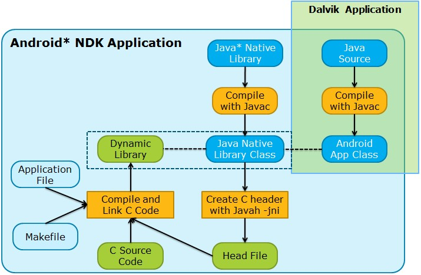
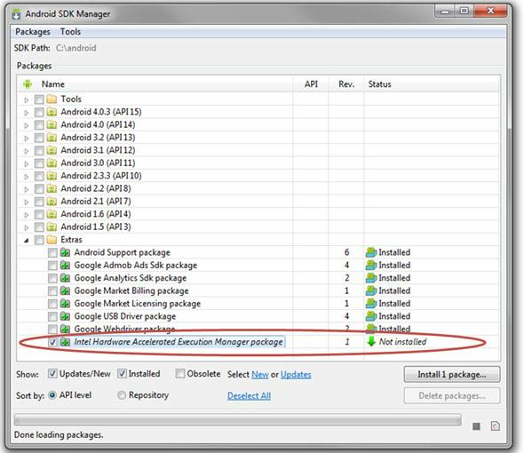
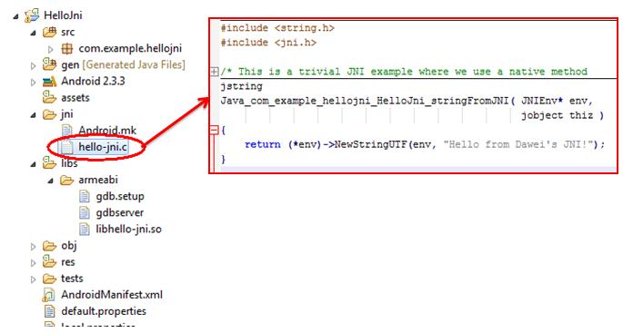
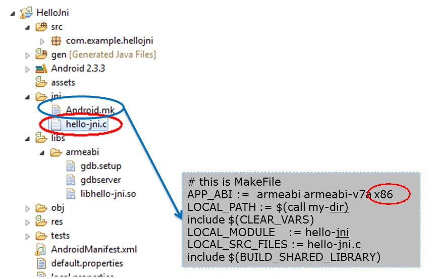
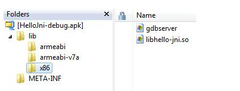
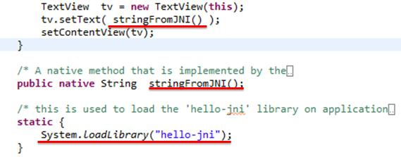
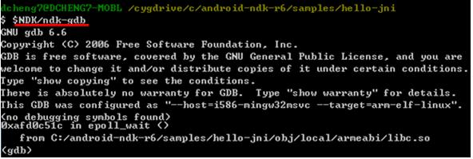
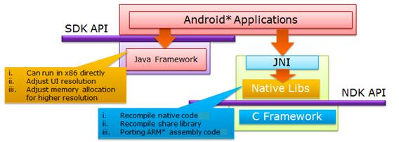

What to expect at droidconIN 2016
by Karthik Balakrishnan · 26 October 2016
droidconIN is India's largest Android conference, and part of a worldwide series of conferences focused on the Android ecosystem. This year will be the 6th edition, and will take place on November 10th-11th, 2016 at the MLR Convention Centre, JP Nagar, Bangalore.
In 2016, we are doubly-focused on core Android development, and the ecosystem of tools and frameworks around it.
Every year, the Android ecosystem moves to something new and cutting edge. At times, it can be difficult to stay on top of things and decide which technologies are worth investing in for you and your team.

We have a handpicked selection of topics and speakers who we believe are best positioned to help you navigate this ecosystem.
How does Dropbox do Android development?
What kind of processes, tools, and styles do they follow to develop, test, and ship updates? Piotr is coming down to India to tell you all about it.
Are you considering React Native?
Mario will talk about how Myntra uses React Native in production, and their learnings and insights from it.
Perhaps the hottest tech in Android this year, Firebase.
Soham shares his experience using it across a variety of apps talking about what it can or can't do, and when and where it makes sense for you to use it.
Besides these, droidconIN has three main areas of focus:
Re-architect
Every year the Android ecosystem has new ideas on what patterns and architecture work best, iterating over ways to make development easier, more readable, faster, and less error prone. Over the last year, we've seen a major shift towards adopting some of the functional and reactive programming paradigms in Android.
With the frameworks and patterns like RxJava, MVVM, and data-binding, bloated Activities and Fragments, AsyncTasks, and callbacks are a thing of the past.
We'll take a hard look at these new paradigms and help answer some key questions:
- Are these paradigms for you? What kind of problems to they solve?
- Should you make the switch from what you currently use? What are the benefits?
- Do they actually help maintainability, testing, collaboration, etc?
- What kind of effort does it take to rewrite an app? Is it worth it?
- How does knowing all of this help tech teams to organize themselves better?
Deep Dives
Learn about the inner workings of Android, and how you can use them to your advantage.
- How do you make your app evolve with use? Could you tailor it to a user's age, gender, and habits? Faiz has some unconventional ideas on how you can embrace mutative design, and build a UI that is tailored to a user.
- Learn to extend Android's LayoutInflator, and plug in your custom views and attributes.
- What if you don't need XML Layouts anymore, but loaded everything by server-provided JSON? You can make all UI changes remotely!
- Learn about ConstraintLayouts, and how you can do away with all of those complex, nested and weighted LinearLayouts and RelativeLayouts.
- Get started with Android's NDK, and learn how to utilise C/C++ libraries inside your Android apps and gain a performance boost.
Emerging
We'll also cover a bunch of emerging tech and trends in the Android ecosystem this year. These will include things like Brillo and Weave for IoT devices, Android and Robotics, etc.
Besides this, we also discuss Android's security architecture, Kotlin, Xamarin and many more.
Planning Droidcon 2013
by Aravind Krishnaswamy · 4 November 2012
These are notes from an incredibly productive closing session at Droidcon 2012 where we welcomed feedback towards the planning of 2013.
Nearly 150 participants stayed on until nearly 7PM(!) and offered great ideas. We've categoried them in order of priority (P1 highest) based on a show of hands at the event.
First, a quick announcement: Droidcon 2013 is going to be a 3 day session! It's going to happen at the end of November 2013.
Ideas for 2013
- (P1) Put out early guidelines on what beginner/intermediate/advanced mean so that speakers can be more consistent in classifying their sessions, and attendees can gauge their interest levels
- (P1) More advanced sessions that cover system level topics - consider a systems oriented track
- (P1) Several developers build both iOS and Android apps - there is interest in cross platform, but not just HTML5, but core/native approaches & design for each platform.
- (P1) Foster more informal offline discussions with some structure, while reducing structure and formal steps around the main tracks
- Bulletin Board with post-its to connect ('startups', 'looking for a tech co-founder')
- Get to know who else is attending (attendees register on lanyard.com)
- Speakers can indicate where they will be for follow o n discussions - for instance, a lounge table # in the Speaker Lounge
- Stickers for name tags - indicate UX, Systems, VCs, etc
- (P2) Consider running one track barcamp style
- (P3) Consider having an informal hacknight on the 1st/2nd night of the event
- (P1) Communication can be improved & made available earlier
- A newly designed Android app is being designed and built by @lut4rp, he is da man.
- The whole mechanics of how the event websites are being has been revamped, and next years site should be up well in advance
- (P3) Consider gamification of the NFC interactions
- possible WiFi constraints?
- (P2) Speaker Prizes/Recognition? Is that the right incentive? Can we judge parallel track sessions effectively?
Misc Feedback
- Overall quality of content was good
- More app ideas + app jam sessions
- Casual hallway discussions & networking was good
- Everyone feet welcome
- 30 minutes - worked well, pushed speakers to be more effective and efficient.
- Some speakers may need to submit 2 sessions or a workshop if they have more content.
- Speakers who finished in 10-15 minutes may need to work on pacing themselves.
Logistics & Infra
- Need a better mobile projectors
Once more, a special thanks to the members of the Program Committee, all of whom are from the community and took time out of their day jobs.
- Aravind Krishnaswamy - Program Chair (@twitortat)
- Amrit Sanjeev - Assistant Chair (@amsanjeev)
- Soham Mondal (@s0ham)
- Kingsley Joseph (@kingsley2)
A special thanks to all the volunteers for all their hard work behind the scenes. And this event wouldnt have been possible without our awesome sponsors!
Thanks everyone for all the support & feedback. Lets hope the Mayans were wrong, and we'll regroup again next year. Comments are yet to be built into this site - meanwhile send ideas to Kiran (@jackerhack) and Arvi (@twitortat).
"For Droidcon 2013, I would like to see..."
by Haris Ibrahim K. V. · 3 November 2012
Just an afternoon more to go before Droidcon 2012 comes to an end. The participants are enjoying themselves and busy making the most out of their time here. We have been talking to a few about how it has been till now as well as what they would like to see in Droidcon 2013. Here are a few of the thoughts that they shared.
Ruchir, who has been a Linux developer in the past, was interested in understanding accessibility features in Android phones and also about backend development. Even though we had many core development talks this time, it seems his appetite for those was not satisfied.
Shreyas, Raghotham and Nischal are enjoying themselves. It seems they found the talks so interesting that they wanted the sessions to last longer than just 30 minutes. They found the session on Kinect and Android by Allen Thomas Varghese and the one on using websockets to control robots in real time by Sudhar Muthu to be extremely interesting. Soham's crash course on Android development had reached out to many of the participants and these three were among them. Upon being asked what they would like to see in Droidcon 2013, they said in one breath, "Bring on the goodies!".
Sushma and Shubha were much impressed by Sudhar Muthu's talk on Robotics. They also found Isaac Wesley's talk on Constructive design for Android equally interesting. Extremely interested in coding, they wish for more hands on sessions where they can sit and hack it out. Hey team, we should really make sure these two get to know about our Hacknights!
News, twitter, word of mouth, mailing lists, event notices - seems just not enough as far as Amit Chatterjee was concerned. "I want to know of these events, so reach out to me!". Enthusiastic about tech events and always looking to hang out with fellow developers, he was glad that he came to know about Droidcon at least at the last moment. We promise to reach out to the geeks there and for any among who is wondering right now how to know of HasGeek events, sign up to be notified of our events.
While Ashwan was walking around talking to the participants, he happened to meet god (aka Kingsly) and a certain lady by the name of Francesca, on his way. Before even getting a chance to greet them, Kingsley jumped in, "The event is awesome! Party on dude!". Francesca followed up, "Internet is awesome! Internet guy is awesome!".
In case some among you might be wondering, Kingsley is our man behind the Internet here at the venue and Francesca is co-ordinating everyone, telling us what needs to be done. So if the Internet is good for you guys, thank god.
Krishnan was one among those who wanted to sit and hack at something, and as such was expecting more hands-on sessions. He loved Isaac's session on design for Android and is eagerly looking forward to the developers sharing their experiences with the crowd.
The end's in sight for this year folks! Get ready, for Droidcon 2012 is going to end with a bang!
Droidcon 2012 is on!
by Haris Ibrahim K. V. · 2 November 2012
This is so exciting! Droidcon is on and its quite a rush at the registration desks. Everyone is comfy with the venue and many are already making new droid friends. It is heart warming to know that people have actually flown in from various parts of the country including Delhi and Pune just for the event.
We have been talking to some of the participants and they shared their feelings and expectations on being here.
It was Shashi Kant and Harvinder who had flown in from Delhi for the event. Already excited at being here, they are looking forward to the talks and meeting fellow developers.
Ajay Sharma, who is enthusiastic about game development, said that he was interested in the minute details of development that people usually tend to overlook. Going through a few of the proposed sessions, he realized that this was the place to be and is eagerly waiting to get the day started. He even showed us his schedule where he had already thought out and made plans for which all talks he was going to attend! I'm sure we'll find only a handful who have come that much prepared.
The HasGeek crew including all the volunteers, are all over the place, getting the venue into shape and busy making sure that it is going to be a wonderful experience for the attendees.
Taking to Chandravadan and Ragvendra, we were reassured that Droidcon was not only just about writing software for Android phones, but it was also about making good friends. It seems that these two jovial folks met in the bus and the term "Droidcon" was all that they needed to start up an interesting chat. They were sitting together after registrations trying to figure out which all talks they wanted to attend. They found most of the talks to be interesting and were a bit confused about whether to attend James hugman's talk on The state of web AND native in 2012 or Yashwanth Kumar's talk on DelightCircle. Hope they've figured it out!
Udai Kiran, who was pretty new to the area of Android development, said that he was really looking forward to the talk on Stealing a droid app + data in daytime by Akash Mahajan. Excited to be here, he is looking forward to hanging out as well as attending the talks.
Nishant, who has flown in from Pune was interested in meeting enthusiastic developers, which he is sure to find among the crowd here.
People have their times in life where they switch between management and coding. Prabash Takur is one among them who has gone over to management recently. However, his love for code still remains and image processing is his area of interest and as such, is looking forward to the talk on OpenCV image processing by Wingston Sharon. He expressed his amazement at not having known about HasGeek any sooner and was happy that he got to know about Droidcon from his friend before it was too late.
Well, it seems the folks are all set and ready for the day ahead. Let the show begin!
Getting to Droidcon, hashtags, Google+ and more
by Ashwan Lewis · 2 November 2012
Getting there
For directions to the Droidcon India venue, check out this post: http://droidcon.in/2012/directions-to-venue In case you're still having trouble, please call Mr. Prasanna Kumar (+91 88613 01788), Manager, MLR Convention Centre or Mr. Kiran Kumar, Associate Manager (+91 98800 85365) for help.
Registration, ID and students
Try to get to the venue by 9:00am. You will beat the crowds on the road as well as the ones queueing up at the registration desk. We've also got some breakfast for the few early birds! Please pick up your participant badge and kit from the registration desk and wear the badge at all times on both days of the conference. You do not need a print out or an electronic copy of your ticket but just any id with the same name as the one you've registered with. Those who have bought a student ticket will need to use a valid student id card.
Your badge contains an NFC card which you can use to share your contact details at any of the sponsor stalls. HasGeek does not share participant details with sponsors without your explicit permission. Please do return the NFC card at the end of the conference. You can keep the badge as a souvenir though.
Dress code
I'm just kidding, we don't have a dress code at HasGeek events! But thanks to cyclone Nilam, it might be a good idea to carry some form of rain-wear on the off chance you need to step out. The auditorium and halls may also get chilly with the air conditioning, so you may want to have a light jacket or sweater.
Twitter hashtag, Google+ Event
This is an Android event, so I'm sure many of you will be busy tweeting or snapping photos with your smartphones. The official Twitter hashtag for the event is #droidcon. Droidcon London was about a week ago, and I still see a few tweets from them, so I'm counting on all of you to drown them out with the Droidcon India tweets!
We've also set up a Google+ event for Droidcon India, so be sure to join in and share any photos you've taken there.
Anything else?
If I've missed anything out or you need any other information (other than directions!) please do call Zainab (+91 99454 73641) or Francesa (+91 74066 36803) or catch any of us at the HasGeek desk/registration counter. Even if you don't have questions, feel free to stop and talk to us, give us your thoughts about the event. We love catching up with fellow geeks!
Intuit – A 30 Year old startup with Mobile First thinking
by Intuit · 2 November 2012
Forbes magazine recently referred to Intuit as a 30 year old startup for the culture that it has in bringing new ideas to impact.
Folks at Intuit are driven to improve small businesses' financial lives across the world so profoundly that they can’t imagine going back to the old way of doing things. Marching with this purpose, Intuit folks build financial software such as Quicken, QuickBooks and several others that are loved and recommended by millions of customers in the US. Very recently QuickBooks was made available in India to delight small business customers here.
With its ubiquity, mobile phones have introduced a fundamental shift in the behavior of users and small businesses world over. Many of small businesses are running their entire business from a mobile. Keeping in tune with this change Intuit is trying to reimagine how solutions can be built with a mobile first thinking. An example is SNAP Tax which lets a user use a cellphone camera to scan in their tax deduction form and for simple returns, file taxes straight from the device.
Android is a key mobile platform amongst smartphone platform in the market and Intuit has several applications developed on the Android platform. Last year engineers from Intuit India Development Center attended Droidcon India and were quite blown away to be part of the largest Android developer conference in this side of the world. This prompted us to support the conference as a sponsor this year.
We would love to share & learn from other droid attendees; feel free to talk to us at our stall at Droidcon. You will also find it easy to recognize us in Intuit blue t-shirts inside the conference halls. You can find some of us on Twitter as well @mtrajan, @sdaas, @madhavn, @pranayairan , @gkrishnan
Intuit IDC was also ranked as the #8 great places to work in India 2012 by GPTW India & Economic times and is also ranked as Fortune #1 most admired Software Company in the world.
This is a sponsored blog post from Intuit
The hashtag chat with the team behind Atooma
by Ashwan Lewis · 1 November 2012
We had a fun chat with the Atooma team yesterday with one minor hiccup at the start. We were ready to chat with them an hour early thanks to a mix up with time zones!
In case you missed it, we've gathered up most of the tweets from the chat on Storify, but don't let the conversation end there! Feel free to tweet to us anytime at @droidconIN
Directions to the Venue
by Zainab Bawa · 1 November 2012
The MLR Convention Centre is situated in Mahadevpura. Should you take an auto or a taxi or ask for directions on the road when driving, it is advisable to say Mahadevpura, or Mahadevpura Post to be more precise.
You can reach MLR Convention Centre from either from K R Puram side, or from ITPL, depending on which direction you are coming from.
If you come from K R Puram side, the landmarks to watch out for are:
1. Whitefield Honda Showroom
2. Bimal Maruti Showroom (on your right. You are about a kilometer or so away from the venue from this point.)
3. Phoenix Market City (on your left)
4. VST Tillers and Tractors (on your left)
After VST tractors and tillers, take the immediate left and continue straight down, until about 750 meters or till you reach the end (where you see the railway line). MLR Convention Centre is the last building on your right.
If you come from ITPL, watch for the Brigade Metropolis building on your left. Skip the right after Metropolis and take the second right turn. Continue into the right turn until about 750 meters or till you reach the end (where you see the railway line). MLR Convention Centre is the last building on your right.
At the entrance of the lane where the MLR Convention Centre is situated, there is a prominent signboard for CounterCulture. The MLR Convention Centre signboard is smaller and less significant. Also, the signboards of shops on the main road will say Garudacharpalaya. You are in the right area.
If you come from Old Madras Road or the Old Airport Road, you can turn left at the Kundalahalli Gate. Some of the landmarks on your way from here are Hyper City Mall, Dominos Pizza, ITPL DND Road and Brigade Metropolis.
You can also take the Metro until Byappanahalli. MLR Convention Centre is about 8-9 kms from the metro station.
For those planning to commute via BMTC buses, there are a number of air-conditioned volvo buses (red in colour) as well as non-AC buses which go to ITPL from various parts of the city. From ITPL, you can take a rickshaw. If you are on a bus from ITPL, get off at Garudacharpalya and cross the road. Look for the Counter Culture signboard. If you are coming by bus from KR Puram, get off at Garudacharpalya bus stop. The stop is right at the junction where the Counter Culture signboard is. People coming from other parts should take a bus on the ring road and get off at “Tin Factory”. From here, switch to a bus heading towards ITPL.
The routes to Whitefield, irrespective of whether you are coming from K R Puram side or from the Outer Ring Road, experience heavy traffic after 8 AM. We advise you to plan your travel so that you start for the venue around 7:30 AM and reach the venue in time for registration and the keynote session. At this time, it will take you about 45 minutes to reach the venue. If you start later than 8:00 AM, it can take up to 1.5 hours to reach the venue. We will have some breakfast at the venue.
One last pointer: the MLR Convention Centre shares its premises with the Brigade School. This is another landmark to watch for.
The address of the venue is:
MLR Convention Centre
Dyvasandra Industrial Layout
Mahadevapura, Whitefield
Bangalore, Karnataka
India
If you are lost or need directions, please call Mr. Prasanna Kumar (+91 88613 01788), Manager, MLR Convention Centre or Mr. Kiran Kumar, Associate Manager (98800 85365).
Android* Application Development and Optimization on the Intel® Atom™ Platform
by Dawei Cheng · 1 November 2012
Intel and Lava launched the first Android* phone, the XOLO X900, based on the Intel® Atom™ processor in 2012. Many more Android phones based on the Intel Atom processor are planned to be released. This is exciting news for both end users and Android developers. To reach more consumers, it’s important for Android developers to know how to make their applications compatible and effective on these devices. This blog post introduces detailed methods for developing and porting an Android application on the Intel Atom platform. Android developers can use this blog post as a reference to build high quality applications for the Intel Architecture.
1. Android Application Classification
Android applications can be classified into two types as shown in Figure 1.
- Dalvik applications that include Java* code and use the Android official SDK API only and necessary resource files, such as xml and png, compiled into an APK file.
- Android NDK applications that include Java code and resource files as well as C/C++ source code and sometimes assembly code. All native code is compiled into a dynamic linked library (.so file) and then called by Java in the main program using a JNI mechanism.

Figure 1: Two types of Android applications
2. Android Native Development Kit
2.1 Introduction
The Android Native Development Kit (NDK) is a companion tool to the Android SDK. The NDK is a powerful tool for developing Android applications because it:
- Builds performance-critical portions of your applications in native code. When using Java code, the Java-based source code needs to be interpreted into machine language using a virtual machine. In contrast, the native code is compiled and optimized into binary directly before execution. With proper use of native code, you can build high performance code in your application, such as hardware video encoding and decoding, graphics processing, and arithmetical operation.
- Reuses legacy native code. C/C++ codes can be compiled into a dynamic library that can be called by Java code with a JNI mechanism.
2.2 Tools Overview
During the development period, you can use the Intel® Hardware Execution Manager (HAXM) to improve Android simulator performance. HAXM is a hardware-assisted virtualization engine (hypervisor) that uses Intel® Virtualization Technology (Intel® VT) to speed up Android application emulation on a host machine. In combination with Android x86 emulator images provided by Intel and the official Android SDK Manager, HAXM results in a faster Android emulation experience on Intel VT-enabled systems. To get more information about HAXM, visit: http://software.intel.com/
2.3 Installing HAXM
Use Android SDK Manager to install HAXM (recommended), or you can manually install HAXM by downloading the installer from Intel’s web site. If you want to update it automatically, please install it using Android SDK manager as shown in Figure 2. [1]

Figure 2: Install Intel HAXM using Android SDK Manager
You can also download an appropriate installation package from http://www.intel.com/software/android to your host platform, and then follow the step-by-step instructions to install it.
2.3.1 Set up HAXM
The Android x86 system image provided by Intel is required when running HAXM. You can download the system image using Android SDK Manager or manually download it from the Intel® Developer Zone website.
After images install successfully, Intel® x86 Android emulator images are automatically executed using the “emulator-x86” binary provided with the Android SDK. The Android emulator is accelerated by Intel VT, which speeds up your development process.
3. Developing and Porting NDK Applications for Intel Atom Architecture
3.1 Developing NDK Applications for Intel Atom Processor-Based Devices
After successfully installing the NDK, please take a few minutes to read the documents in /docs/ directory, especially OVERVIEW.html and CPU-X86.html, so that you understand the NDK mechanism and how to use it.
NDK application development can be divided into five steps shown in Figure 3:
Figure 3: NDK Application Development Process
The hello-jni demo is used to illustrate these five steps. You can find the demo in your NDK Root\samples\hello-jni folder [5]. Hello-jni demo is a simple application included in the NDK that get a string from a native method in a shared library and uses it in the application UI.
3.1.1. Create native code
Create a new Android project and place your native source code under /jni/. The project content is shown in Figure 4. This demo includes a simple function in native code called Java_com_example_hellojni_HelloJni_stringFromJNI(). As shown in the source code, it returns a simple string from JNI.

Figure 4: Create Native Code
3.1.2 Create MakeFile ‘Android.mk’
NDK applications are built for the ARM platform by default. To build NDK applications for the Intel Atom platform, you need to add APP_ABI := x86 into the MakeFile.

Figure 5: Create MakeFile
3.1.3 Compile native code
Build native code by running the 'ndk-build' script from the project's directory. It is located in the top-level NDK directory. The result is shown in Figure 6.

Figure 6: Compiled native code
The build tools automatically copy the stripped shared libraries to the proper location in the application's project directory.
3.1.4 Call native code from Java
When you deploy the shared library successfully, you can call the function from Java side. The code is shown in Figure 7. A public native function call stringFromJNI() is created in Java code, and this function loads the shared library using System.loadlibrary().

Figure 7: Call native code from Java
3.1.5 Debug with GDB
If you want to debug the NDK application with GDB, the following conditions must be satisfied:
- NDK application is built with 'ndk-build'
- NDK application is set to ‘debuggable’ in Android.manifest
- NDK application is run on Android 2.2 (or higher)
- Only one target is running
- Add adb’s directory to PATH
Use the ndk-gdb command to debug the application. You can either set a breakpoint or a step-by-step debug to track the change history of a variable value as shown in Figure 8.

Figure 8: Debug NDK application with GDB
3.2 Porting Existing NDK Applications to Intel Atom Processor-Based Devices
In this section, it is assumed that you have an Android application for the ARM platform and that you need to port it before deploying it on the Intel Atom platform.
Porting Android applications to the Intel Atom platform is similar to the development process. The steps are shown in Figure 9.

Figure 9: Port Android applications to the Intel Atom platform
3.2.1 Port Dalvik applications
Dalvik applications can run on Intel Atom processor-based devices directly. The user interface needs to be adjusted for the target device. For a high resolution device, such as tablets with a 1280*800 resolution or higher, default memory allocation may not meet the application requirements, which results in the inability to launch the application. Increasing the default memory allocation is recommended for high resolution devices.
3.2.2 Port Android NDK applications
Porting NDK applications is a bit more complicated than porting Dalvik applications. All NDK applications can be divided into three types based on the following properties of the native code:
- Consists of C/C++ code only that is not related to hardware
- Uses a third-party dynamic linked library
- Includes assembly code that is highly related to non-IA platforms
Native code that consists of C/C++ code only that is not related to hardware
- Recompile the native code to run the application on the Intel Atom platform successfully.
- Open the NDK project and search for Android.mk file and add APP_ABI := armeabi armeabi-v7a x86 in Android.mk and re-build the native code with ndk-build.
- If the Android.mk file is not found, use the ndk-build APP_ABI="armeabi armeabi-v7a x86" command to build the project.
- Package the application again with supported x86 platforms.
If native code uses a third-party dynamic linked library, the shared library must be recompiled into x86 version for the Intel Atom platform.
If native code includes assembly code that is highly related to non-IA platforms, code must be rewritten with IA assembly or C/C++.
4. Optimizing Application Performance
4.1 Performance Tuning
During the coding process, use the following methods to optimize your application performance on the Intel Atom Platform.
4.1.1 Use Inline instead of Frequently Used Short
Inline functions are best used for small functions such as accessing private data members. Short functions are sensitive to the overhead of function calls. Longer functions spend proportionately less time in the calling/returning sequence and benefit less from inlining. [4]
The Inline function saves overhead on:
- Function calls (including parameter passing and placing the object's address on the stack)
- Preservation of caller's stack frame
- New stack-frame setup
- Return-value communication
- Old stack-frame restore
- Return
4.1.2 Use Float instead of Double
FPU is a floating-point unit that is a part of a computer system specially designed to carry out operations on floating point numbers, such as: addition, subtraction, multiplication, division, and square root. Some systems (particularly older, microcode-based architectures) can also perform various transcendental functions such as exponential or trigonometric calculations. Current processors perform these calculations with software library routines. In most modern general purpose computer architectures, one or more FPUs are integrated with the CPU [6].
The Intel Atom platform has FPU enabled. In most cases, using Float instead of Double speeds up the data computing process and saves memory bandwidth in Intel Atom processor-based devices.
4.1.3 Multi-thread coding
Multi-thread coding allows you to use the hyper-threading function of the Intel Atom processor to increase throughput and improve overall performance. For more information about multi-threading, refer to: http://www.intel.com/content/www/us/en/architecture-and-technology/hyper-threading/hyper-threading-technology.html
4.2 Building High Performance Applications with Compiler Flags
As you know, native code is built by GCC in Android applications. But do you know the default target device of GCC? It is the Pentium® Pro processor. Targeted binary code runs best on the Pentium Pro platform if you do not add any flags when compiling your native code. Most Android applications run on the Intel Atom platform instead of Pentium Pro. Adding specific flags according to your target platform is highly recommended. You can add the following recommended flags during compilation on the Intel Atom platform:
-march=atom
-msse4
-mavx
-maes
For more information about compiler parameters, refer to: http://gcc.gnu.org/onlinedocs/gcc/i386-and-x86_002d64-Options.html
5. Conclusion
This blog post discusses how to develop and optimize Android applications on Intel Atom platforms, as well as how to develop and port NDK applications.
A summary of the key points include:
- Most Android applications can execute on the Intel Atom platform directly. NDK applications need to recompile native code. If assembly code is included in the application, this portion of the code must be rewritten.
- Make full use of IA (Intel Architecture) features to improve your Android application performance.
- Add platform-specific compile switches to make the GCC build code more effective.
Reference
- http://software.intel.com/en-us/articles/installation-instructions-for-intel-hardware-accelerated-execution-manager-windows/
- http://software.intel.com/en-us/blogs/2011/08/18/understanding-x86-vs-arm-memory-alignment-on-android/
- http://software.intel.com/en-us/articles/ndk-android-application-porting-methodologies/
- http://msdn.microsoft.com/en-us/library/1w2887zk.aspx
- http://developer.android.com/sdk/ndk/index.html
- http://en.wikipedia.org/wiki/Floating-point_unit
About the Author
Dawei Cheng is an application engineer focused on enabling mobile applications, including Android application development and optimization for x86 devices, and Web HTML5 application development. Dawei also has rich experience in mobile application UI and UX design.
Disclaimers
All content provided on this blog post is for informational purposes only. The owner of this blog/blog post makes no representations as to the accuracy or completeness of any information on this site or found by following any link on this site. The owners will not be liable for any errors or omissions in this information nor for the availability of this information. The owners will not be liable for any losses, injuries, or damages from the display or use of this information.
*Other names and brands may be claimed as the property of others
This is a sponsored blogpost from Intel®
Speaker previews
by Haris Ibrahim K. V. · 31 October 2012
Droidcon 2012 is just around the corner. The enthusiasm is building up and everyone is set and ready for the droid talks as well as the party. This year we have some exciting talks queued up. You can find the list over here.
Here are a few of the speaker previews.
Akash Mahajan: The real incident of stealing a droid app+date in daytime
A talk on how you can bypass developer security controls and steal data as well as the entire Android application package. Find more details here.
Anenth Guru: Augmented reality for navigation - Thru the galli
Thru the Galli solves the last-mile navigation issues associated with current map based direction systems like Google Maps. Current directions work pretty well for known landmarks. But, to reach a specific location from a popular landmark through shortcuts, human assistance is required. Find mroe details here.
Gaurav Kheterpal: Using appcelerator titanium to build native android apps without the native pain
A talk on how you can use appcelerator titanium to break into the field of mobile development. It will also cover the classic native v/s hybrid v/s mobile web debate and how titanium fits into it. You can find more details here.
Twitter hashtag chat with Atooma - 31st Oct, 2:30 PM
by Zainab Bawa · 30 October 2012
One of the things that makes Android such a fantastic platform is that developers get deep access to all areas of the phone. An excellent example of what you can do with this, see Atooma, an app that provides if/then functionality for anything that happens on your phone. Want your phone to read out SMSes to you when you're driving? With Atooma, you can have your phone watch your speed and read out messages if you are moving faster than a walking pace. Or you can cross-post SMSes to Twitter, or make the phone automatically go silent when you're in a multiplex.
We asked the Atooma folks to join us for a Twitter hashtag chat. It's on for tomorrow, October 31, at 2:30 PM. To join, simply follow the #droidcon tag on Twitter and tweet with #droidcon to ask questions. Atooma's CTO Fabrizio Cialdea and his team will answer your questions. Follow them on Twitter @Atooma_Team and save the date to your calendar.
Quick tips for Droidcon Speakers
by Kiran Jonnalagadda · 26 October 2012
Are you a potential speaker at Droidcon? Here’s a few tips that might be handy!
Know your audience
Here’s a few data points on the audience demographic based on job titles that might be useful for you to tune your presentations. (Note: this is based on Droidcon 2011 data, but you can expect a similar pattern).
55% Engineer/Developer
10% Students
8% Manager
3% Founder/Co-Founder
4% C-level (CEO, CTO)
3% Architect
17% Misc
Prep for Offline Demos
All speakers will be provided Wi-Fi access codes. However, invariably all conferences have their share of Wi-Fi and internet issues, and we’d recommend that you keep everything you need for your demo available offline just in case you run into issues. As you know, if things can go wrong, they will. So, dont leave things to chance.
Session Setup
Please arrive at your session room at least 30 minutes in advance to prep. This will also give you a feel for the space, how the audience interacts, and how you’d like to position yourself best. If you’d like to take a bit of a break and relax someplace ahead of your session, feel free to stroll around the MLR Center or hop up to the balcony area of the Auditorium.
Accessorize
If you have any special needs for your demos – Macbook adaptors, additional cables or wiring, or any specialized setup, please plan on bringing them along so they are at your finger tips.
Timing is Everything
IMPORTANT: All sessions are allocated exactly 30 minutes. You have 20 minutes to present and 5 minutes for Q&A, with the remaining 5 minutes for the next presenter to begin setting up while you answer the last set of questions.
Speakers who have more content that 30 minutes are encouraged to either:
- split their talk and propose two separate sessions via the Funnel, or
- skip the first part of their presentation and make it an advanced session
Time is of essence, and you’d want to pace your session effectively. Let the volunteers in your room know if you’d like a 5 & 10 minute reminder so you dont run out of time for questions.
Help Abounds
Need help? Check in with the friendly volunteers or folks at the registration desk and they’ll be more than glad to assist. Just ask around for Noufal Ibrahim if you dont find anyone immediately.
No pitches please, we’re geeks
This is a developer event. So, if you have a pitch about your company, your apps, or yourself, please leave it at the door. And no freebies either, unless you are a sponsor (who BTW have some awesome giveaways).
Rehearse, Rehearse, Rehearse!
If you have a demo, please take the time to rehearse at the Speaker’s Lounge to ensure all your bits are in place. The MLR Convention center has a firewall setup that may block access to some sites.
Accommodation near Droidcon 2012 Venue
by Zainab Bawa · 26 October 2012
A significant number of participants coming to Bangalore to attend Droidcon are from different cities - Chennai, Delhi, Pune. We also have international attendees.
Visit our hotels page to check out the different stay options. We have provided details for hotels that suit the budget traveller's wallet. There are also hotels in central city areas for those among you who want to party in the city after an intense and wonderful conference!
Look forward to meeting all of you in Bangalore, at Droidcon.
Droidcon 2012 party at Counter Culture - it's partaay time, folks!
by Zainab Bawa · 26 October 2012
At a gathering of geeks, why meetup or party? Is this the question that comes to your mind when you read the title of the blog post? ;)
Meetups and parties are a regular feature of large conferences that we organize. These are occasions where you get to talk to speakers, fellow participants and all the conference attendees, outside the formal atmosphere of a conference set-up. The craziest and whackiest ideas emerge over a mug of beer or a toothpick of aloo tikki, a time when the mind is brimming with excitement, enthusiasm and mirth.

In our experience of organizing conferences for the last two years, we have come to realize that participants let their hair down in an informal atmosphere, where everyone is having fun. We had a large gathering of about 250 participants at the Droidcon 2011 party, sponsored by GitHub. Participants chattered and chattered from 7 PM to 11 PM that evening!
At our recently concluded JavaScript conference - JSFoo - we had 60 people showing up for beer.js. Here is what one of the JSFoo participants had to say about beer.js:
There at the bar me and Older Kamal have some talk with first mug of beer at the smoking area. the talk continute for more that half an hour i think. after that had the snack and i get prepared for next drink. ... ... ... later i asked Kamal M to join with me for a drink. he say yes i spare one beer token to him and i order a whiskey. from here my life is going to change. me and Kamal M moved to the smoking area and started talking. i think that talk taken more that an hour. we discussed more technologies, personal stories and more. while we met the Robo(Enthiran) Rakesh Pai he explain about about how he made erroception also the robo. he explain about firmata and more. Rakesh put a proposal with Kamal M to start a commuity called Mumbai JS. Hear this i thought that the punch line of Cafe Coffee Day is wrong its ” a lot more can happen over a Beer” not coffee. after the party we split ed up and Kamal M moved to his hotel, Older Kamal to his home also Kasyup. i hired an rickshaw back to the room.
i found that i forgetten my shyness and fear while talking with Kamal (both) and made me to meet to many people. at the time while talking with Kamal M i forgot my Language problem and talked for more than an hour. now i realized that i can changing. these feeling are my negatives and i am happy for that i can wash it away. Also showed me who is a geek?

So what are you waiting for! Every Droidcon India 2012 participant is invited to the event party on Friday, 2nd Nov, from 6:00 PM onwards at Counter Culture restaurant!
For location and more information about the party venue, visit: http://droidcon.in/2012/venue
Announcing Droidcon 2012
by Aravind Krishnaswamy · 27 August 2012
Droidcon is a two day international conference that's all about Android. It brings together luminaries from all aspects of the Android ecosystem - solo app developers, visual and interaction designers, software startups, enterprise software leaders, robotics and arduino wizards, kernel and ROM hackers, OEMs and platform providers, and technology enthusiasts. This years event follows the same format as last year's hugely successful conference that involved speakers from Google, Cyanogenmod, Robosoft, Future Platforms, Texas Instruments and other ecosystem players.
Community Conference
Droidcon is a HasGeek conference that's run by the Android community for the Android community. Speakers are selected via a community driven voting process and also curated by a Program Committee that consists of experts with several years of experience in the mobile space.
As a community event, we welcome participation and assistance. If you'd like to propose a topic to speak about, please visit the HasGeek Funnel: funnel.hasgeek.com/droidcon2012. If you'd like to be a part of helping out as a volunteer during the event, please contact zainab@hasgeek.com.
Schedule
Droidcon 2012 is happening on Nov 2nd and 3rd at the MLR Convention Center, Whitefield in Bangalore. This years topics include:
App Demos: A series of 'show & tell' stories from Android app developers, who demo their apps and then dive into specific challenges they faced and how they overcame them. Look out for rare nuggets of wisdom from those who've been there and done that.
Workshops: Informal classroom style hands on training with specific objectives and takeaways. Bring your laptop with the latest SDK & learn how to build easy animations, use listviews effectively, work with WebViews and more.
Platforms, Tools & Libraries: Quit blaming your tools & come see what everyone else is using to their advantage. Gain insights into usage of the latest and most popular platforms, tools & libraries, including cross-platform libraries like PhoneGap, Titanium Appcelerator, Kirin, Sencha & more.
Specialized Topics: Watch people who've taken Android to new limits - using sensors, robots, cars & in your TV.